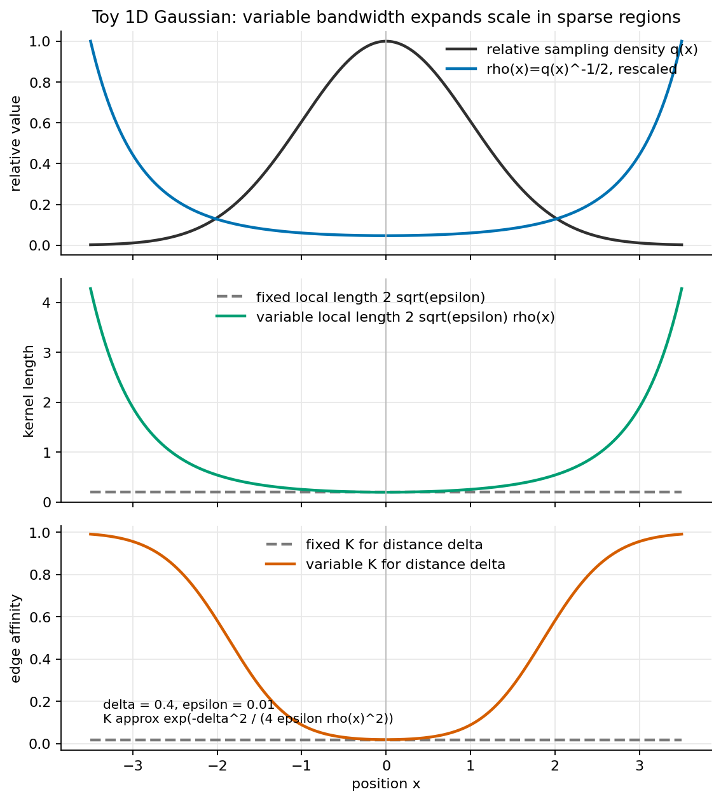
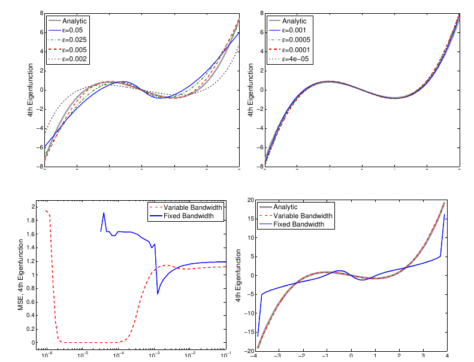
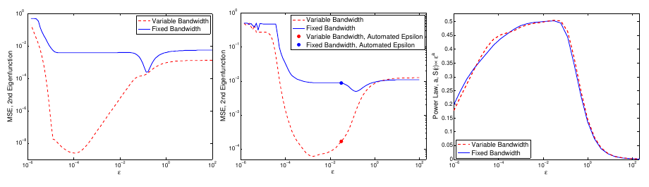
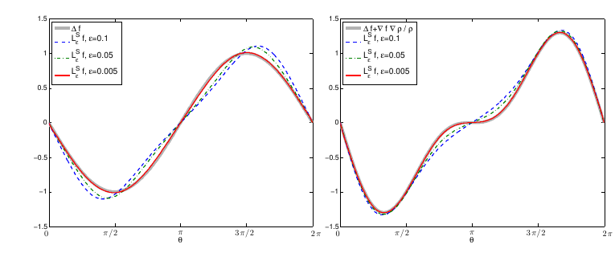

Built 2026-05-15
Berry and Harlim’s Variable Bandwidth Diffusion Kernels
(Berry and Harlim
2016) gives a precise answer to a question that appears whenever
graph weights are adapted to local sampling density: what continuum
operator is actually being approximated? The paper shows that replacing
a global kernel scale by a local bandwidth \(\rho(x)\rho(y)\) is not a benign
implementation detail. It changes both the finite-sample error and the
limiting differential operator unless it is paired with the right
density normalization. Its central construction, especially the
specialization \(\rho=q^\beta\), is
directly relevant to conductance-style comparisons for SIMODS and
gflow, but only as a proposed variable-bandwidth
Gaussian/RBF comparator. It should not be retrofitted onto the current
overlap-density smoother without also adopting the paper’s density
estimate, \(\alpha\)-normalization, row
normalization, and final \(\rho^{-2}\)
generator scaling.
The usual fixed-bandwidth graph kernel treats a Euclidean distance the same way everywhere in the data set. Berry and Harlim study what happens when the kernel scale is allowed to vary with position. This is the mathematical version of a familiar local-scale intuition: in a sparse tail, a point may need to reach farther to find meaningful neighbors, while in a dense region the same physical distance may already be too coarse.
The paper matters for a conductance and kernel-Laplacian review because it separates three ideas that are often blurred together. First, there is the raw edge affinity. Second, there is the density correction used before row normalization. Third, there is the differential operator obtained after the kernel matrix is turned into a generator. P04 shows that all three choices affect the answer. A local bandwidth can improve sparse-density behavior, but it also introduces a drift term unless \(\alpha\), \(\beta\), and the intrinsic dimension \(d\) are chosen to target a particular operator.
The paper’s sign convention deserves an early warning. Berry and Harlim use \(\Delta\) for the negative of the usual Laplace–Beltrami operator and later describe it as having negative eigenvalues. The formulas below follow the paper’s convention. When translating to SIMODS or graph-smoothing language, one should check whether the implementation uses a generator convention, a positive semidefinite graph Laplacian convention, or a conductance-energy convention.
The data are sampled from a density \(q\) on a \(d\)-dimensional Riemannian manifold \(M\subset \mathbb{R}^n\). Here \(d\) is the intrinsic dimension. It is not the ambient dimension, and it is not automatically the dimension of whatever graph has been built from the data. This point matters because \(d\) enters the density estimate, the operator coefficients, and the error powers.
For fixed bandwidth, diffusion maps use kernels of the form \[K_\epsilon(x,y)=h\!\left(\frac{\|x-y\|^2}{\epsilon}\right),\] and approximate, under the paper’s sign convention, the operator \[L_\alpha f = \Delta f + (2-2\alpha)\nabla f\cdot\frac{\nabla q}{q}.\] The parameter \(\alpha\) is the familiar Coifman–Lafon density normalization (Coifman and Lafon 2006). At \(\alpha=1\), the sampling density drift is removed and the limiting operator is the Laplacian. At other values, the density remains part of the diffusion geometry.
P04 asks for the corresponding theory when the bandwidth is local: \[K_\epsilon^S(x,y) = h\!\left(\frac{\|x-y\|^2}{\epsilon\rho(x)\rho(y)}\right).\] The superscript \(S\) indicates the symmetric use of \(\rho\) at both endpoints. The paper is partly motivated by self-tuned spectral clustering (Zelnik-Manor and Perona 2004), but its main contribution is not a new clustering heuristic. It is an asymptotic and finite-sample analysis of the operator induced by these locally scaled kernels.
The practical Gaussian implementation in Section 3 is the most portable form for a graph comparator: \[K_\epsilon^S(x_i,x_j) = \exp\!\left( -\frac{\|x_i-x_j\|^2}{4\epsilon\rho(x_i)\rho(x_j)} \right).\] If \(x_i\) and \(x_j\) are close enough that \(\rho(x_i)\approx\rho(x_j)\), the local length scale is approximately \(2\sqrt{\epsilon}\rho(x_i)\). Thus a negative density exponent, such as \(\rho=q^{-1/2}\), enlarges the effective neighborhood in sparse regions and shrinks it in dense regions. This is a useful conductance analogy, but it is only the first layer of the method.

The second layer is the density correction. Berry and Harlim estimate the sampling density using the variable-bandwidth kernel itself, \[q_\epsilon^S(x_i) = \frac{\sum_l K_\epsilon^S(x_i,x_l)}{\rho(x_i)^d}.\] The division by \(\rho(x_i)^d\) is not cosmetic. The leading term of the variable-bandwidth kernel density expansion is proportional to \(\rho^d q\); dividing by \(\rho^d\) is what recovers \(q\) rather than a bandwidth-weighted density.
The normalized kernel is then divided by \((q_\epsilon^S(x_i)q_\epsilon^S(x_j))^\alpha\), row-normalized, and converted to a generator by \[L_{\epsilon,\alpha,\beta}^S(x_i,x_j) = \frac{\widehat K_{\epsilon,\alpha}^S(x_i,x_j)-\delta_{ij}} {\epsilon\rho(x_i)^2}.\] This last \(\rho(x_i)^{-2}\) factor is another place where the construction departs from a plain symmetric graph Laplacian. The operator used for eigensolvers is a symmetric conjugate of this row-normalized generator, not the unnormalized kernel matrix itself.
Theorem 1 states that, for smooth functions and under the paper’s regularity conditions, the discrete variable-bandwidth operator converges pointwise with high probability to \[L_{\alpha,\rho} f = \Delta f + 2(1-\alpha)\nabla f\cdot\frac{\nabla q}{q} + (d+2)\nabla f\cdot\frac{\nabla\rho}{\rho}.\] The extra \((d+2)\nabla\rho/\rho\) drift is the paper’s key warning. Local bandwidth changes the continuum operator. Even with uniform sampling, a nonconstant \(\rho\) does not recover the Laplacian unless the construction is chosen to cancel the induced drift.
The most important specialization is \[\rho=q^\beta+O(\epsilon).\] Then the limiting operator becomes \[L_{\alpha,\beta}f = \Delta f + c_1\nabla f\cdot\frac{\nabla q}{q}, \qquad c_1 = 2-2\alpha+d\beta+2\beta.\] This formula makes \(\alpha\) and \(\beta\) operator-design parameters. With \(\beta=-1/2\), the paper uses \(\alpha=-d/4\) for a gradient-flow generator with \(c_1=1\), and \(\alpha=1/2-d/4\) for a Laplacian target with \(c_1=0\). The familiar fixed-bandwidth Laplacian case, \(\beta=0\), recovers the Coifman–Lafon choice \(\alpha=1\).
The finite-sample result is equally important. The high-probability error has three parts: an \(O(\epsilon)\) continuum bias, a density-renormalization sampling error, and a ratio-estimator sampling error. Under \(\rho=q^\beta\), the latter two contain powers of \(q(x_i)\). The paper summarizes the sparse-density condition by requiring \[\frac{1-d\beta}{2}>0, \qquad c_2 < 0, \qquad c_2=\frac12-2\alpha+2d\alpha+\frac{d\beta}{2}+\beta.\] For fixed bandwidth with \(\beta=0\) and \(\alpha>0\), \(c_2\) is positive in the usual settings, so the pointwise error can blow up where \(q\) is small. This is the technical basis for the paper’s claim that variable bandwidth is not merely a nicer density estimator: for operator approximation on supports where the density is not bounded away from zero, it can be necessary for convergence.
The experiments support the theorem’s sparse-tail story. On the real-line Ornstein–Uhlenbeck example, fixed bandwidth can appear acceptable for a carefully chosen small deterministic sample, but it becomes unstable as more tail points enter the data. Variable bandwidth keeps the fourth eigenfunction close to the analytic curve across a much wider range of \(\epsilon\).

The two-dimensional Ornstein–Uhlenbeck experiment repeats the same message on \(\mathbb{R}^2\): the variable-bandwidth estimate of the analytic eigenfunction \(\phi_4(x,y)=xy\) is visually reasonable, while the fixed-bandwidth estimate is not, even after empirical tuning. The compact-manifold experiments are more subtle. On the nonuniformly sampled circle and sphere, fixed bandwidth can work if \(\epsilon\) is well chosen, but the variable-bandwidth kernel is less sensitive and better aligned with the automatic \(\epsilon\)-tuning heuristic.

The appendix figures are not just checks of code; they verify the operator identities that control interpretation. Figure A.8 distinguishes left, right, and symmetric bandwidth placements. Figure A.9 verifies that with \(\rho=q^\beta\), changing \(\alpha\) switches between a Laplacian target and a backward Kolmogorov target.

The theorem proves pointwise convergence for smooth functions. The numerical sections compare eigenvectors with analytic eigenfunctions, and the evidence is convincing as a demonstration, but the paper explicitly does not prove spectral convergence for variable-bandwidth kernels. It also excludes manifolds with boundary, especially non-compact manifolds with non-compact boundary. These are not small technicalities for applications where the sampled support has hard truncation, censoring, or project-specific boundary artifacts.
The requirement to know or estimate \(d\) is the main practical burden. The dimension is needed in the \(\rho^d\) density correction and in the coefficients \(c_1\) and \(c_2\). P04 suggests that the slope of an automatic \(\epsilon\)-tuning statistic may provide a dimension estimate, but it does not turn this into a robust dimension-estimation method.
A second transfer risk is terminological. The paper defines kernel
affinities and row-normalized diffusion generators. It does not define
conductance in the SIMODS or gflow sense. The raw Gaussian
weight \[w_{ij}=
\exp\!\left(
-\frac{d_{ij}^2}{4\epsilon\rho_i\rho_j}
\right)\] is a natural conductance-like edge-weight candidate
for a future comparator, but the paper’s claims about Laplacian
recovery, gradient-flow generators, and sparse-density robustness apply
to the full normalized operator, not to that raw affinity alone.
gflowFor SIMODS, P04 is best read as a design specification for a possible density-adaptive Gaussian comparator. It supports the idea that local scale is an operator parameter, not just a graph-construction convenience. A comparator could choose \(\rho_i\) from a pilot density estimate or a nearest-neighbor scale, set \(w_{ij}\) by the variable-bandwidth Gaussian formula, and then evaluate whether the intended smoothing target is Laplacian-like (\(c_1=0\)) or density-biased/gradient-flow-like (\(c_1>0\)).
This should remain distinct from the current
fit.rdgraph.regression() semantics. In the current project
language, supplied weight.list values are positive graph
edge lengths used for local ordering and truncation, while the current
smoothing conductance is based on overlap-density/Riemannian-complex
structure, approximately \(c_e^\rho=1/\max(\rho_1(e),10^{-10})\) in
the current default regime. That is separate from direct inverse-length
conductance and separate again from P04’s Gaussian/RBF
variable-bandwidth affinity.
The strongest project-level lesson is cautionary. If a SIMODS experiment borrows only the raw local-scale Gaussian weight, it should be described as a kernel-conductance comparator inspired by P04. If it claims a Berry–Harlim operator limit, it must also specify \(q_\epsilon^S\), \(\alpha\), \(\beta\), \(d\), row normalization, and the \(\rho^{-2}\) generator scaling. Without those ingredients, the continuum interpretation changes.
The reusable mathematical object is the normalized variable-bandwidth operator, not just the slogan that sparse regions get wider neighborhoods. For future comparisons, P04 suggests the following disciplined split.
Use the raw Gaussian formula as a conductance-like edge weight when the goal is to compare local-scale affinities.
Track the normalization separately, because changing \(\alpha\) and \(\beta\) changes the limiting drift.
Report the intrinsic dimension assumption or estimator, since \(d\) controls both density correction and operator targeting.
Interpret sparse-tail improvements as an operator-estimation claim only when the full P04 construction is used.
Primary source: local canonical PDF , read in full, including theorem statements, implementation details, numerical figures, conclusion, and appendices. Archival scaffolding: local memo and audit . Figure screenshots are internal-review captures listed in ; the local-bandwidth conductance curve is an original explanatory figure derived from the Section 3 Gaussian formula.